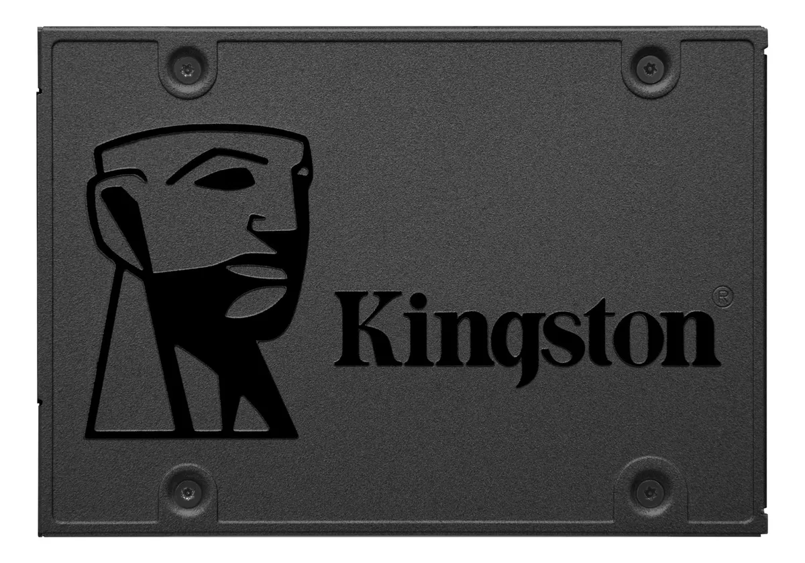
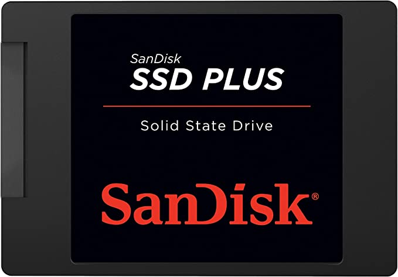
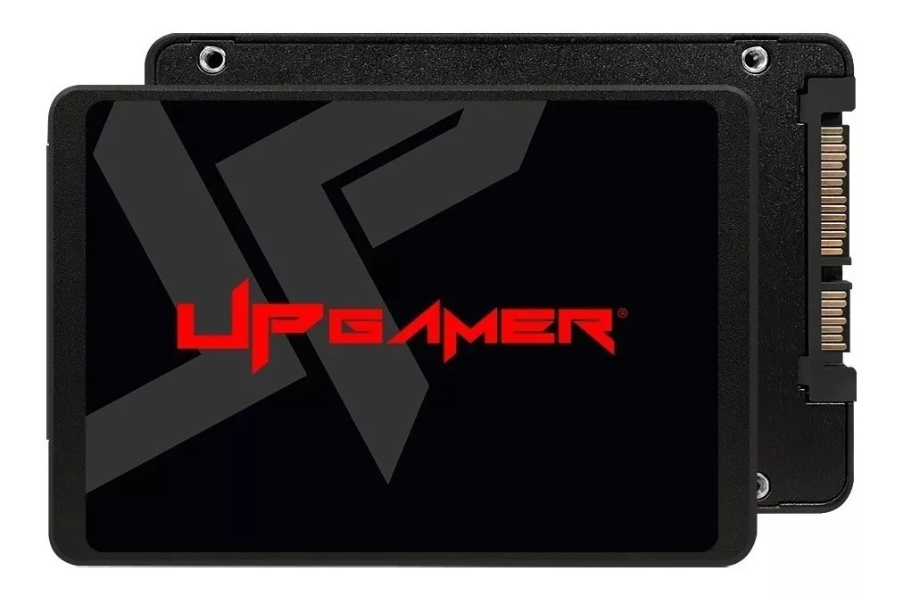

SSD Adata XPG Spectrix S40G, 256GB, M.2 - AS40G256GTC
R$ 256,00
SanDisk SSD interno de 1 TB - SATA III 6 Gb/s, 7 mm, até 535 MB/s - SDSSDA-1T00-G27, Preto
R$ 449,00
HD Interno, Barracuda Compute HDD 3.5, 4TB, ST4000DM004, Seagate, HD interno, Prata
R$ 569,00